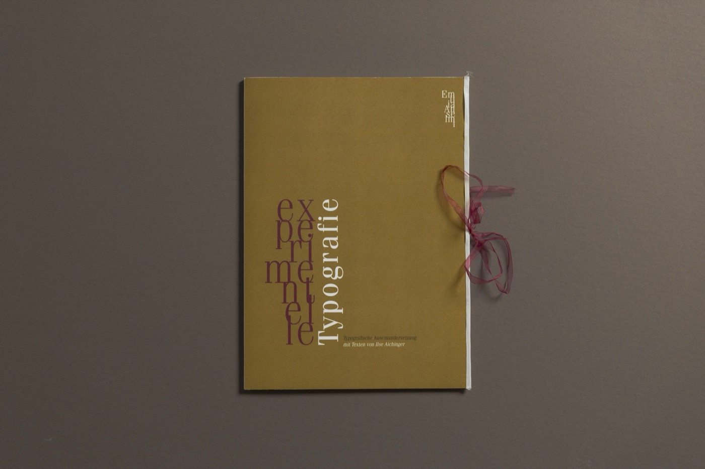
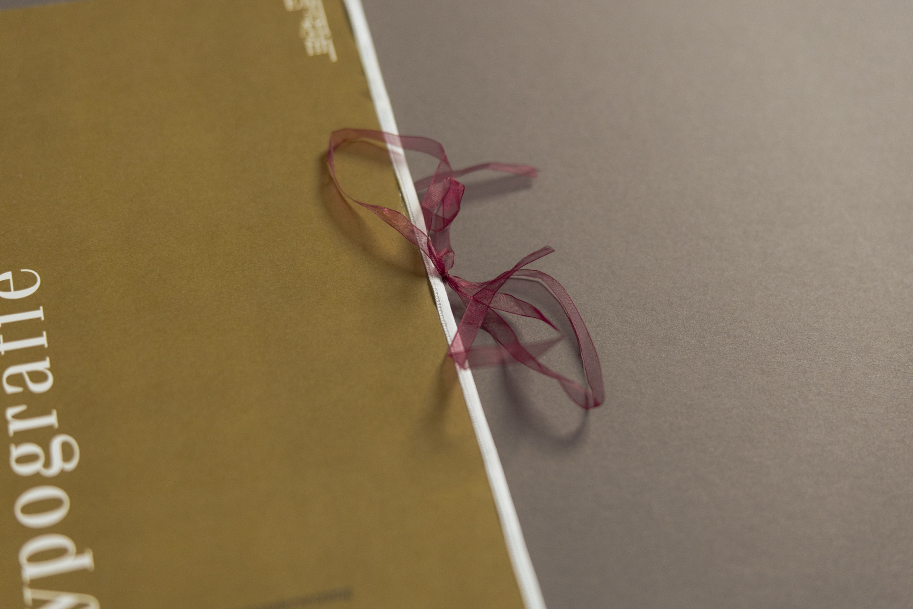
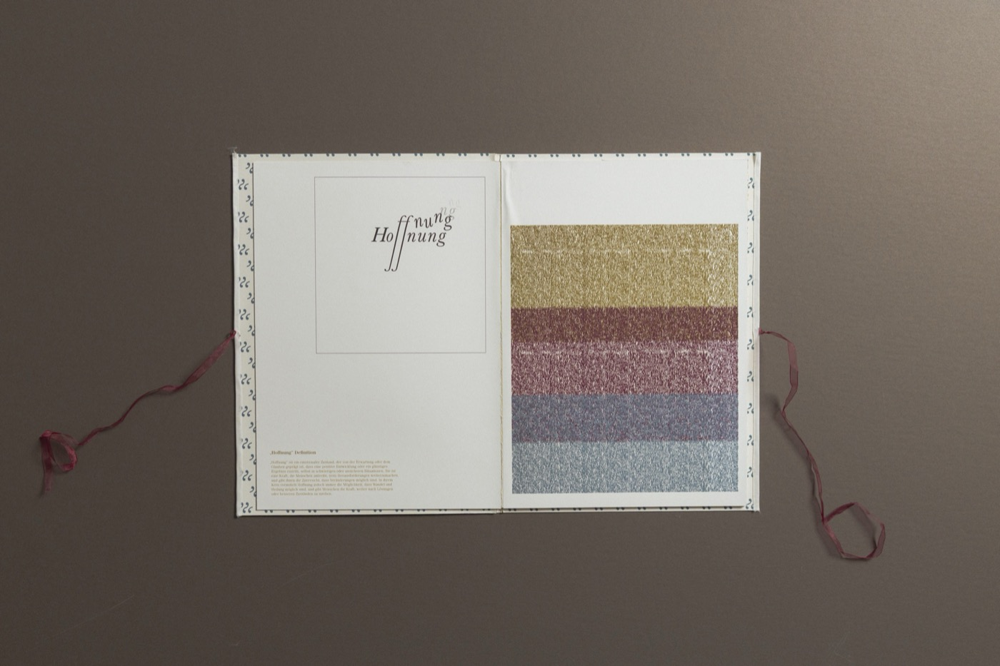
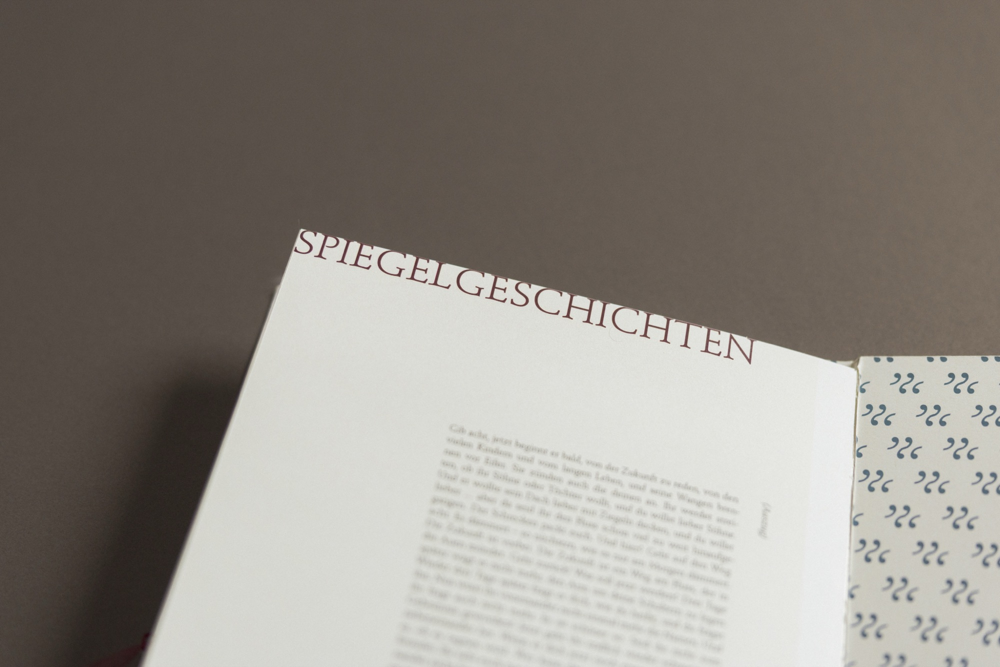
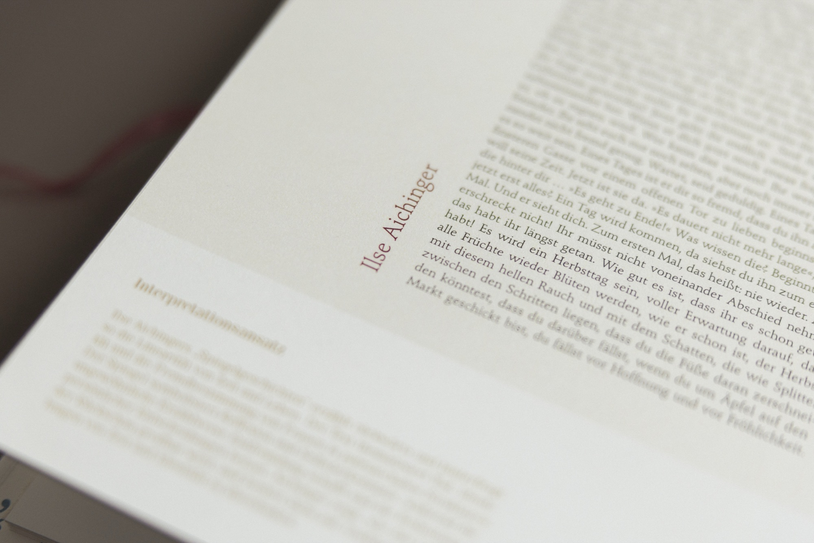
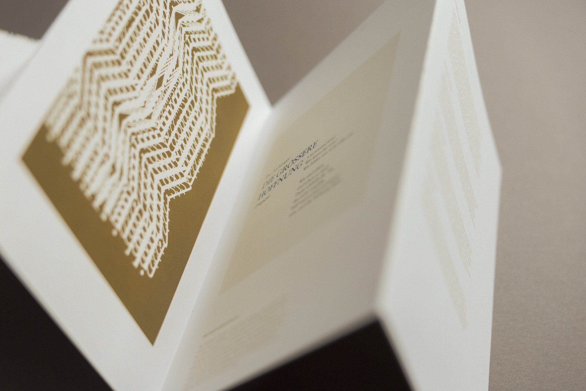
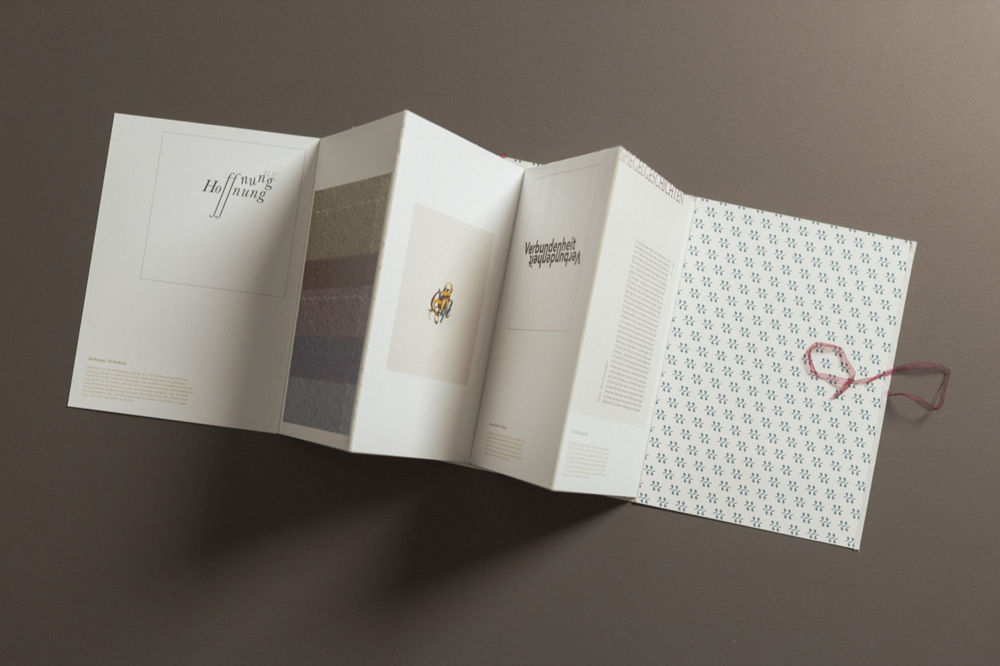
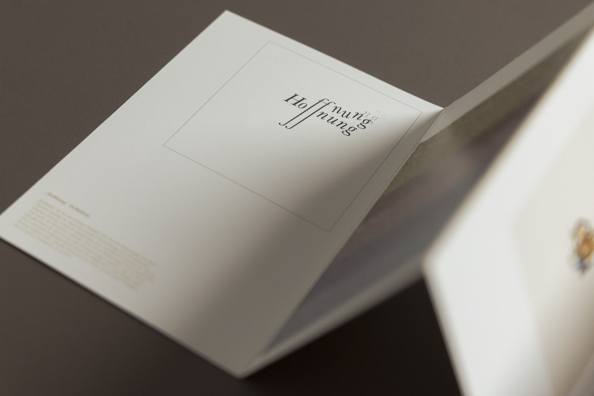

In diesem Projekt habe ich die Grenzen der Typografie ausgelotet und Schrift als eigenständiges gestalterisches Element neu interpretiert. Durch experimentelle Ansätze entstanden Arbeiten, die Buchstaben und Worte aus ihrem gewohnten Kontext lösen und in eine neue visuelle Dimension überführen. Der Fokus lag auf dem Spannungsfeld zwischen Lesbarkeit und Abstraktion, zwischen Form und Bedeutung.







